We now look at the functionality of the different form widgets in detail, looking at what options are available to collect different types of data. This guide is somewhat exhaustive, covering all of the available native form widgets.
| Prerequisites: | Basic computer literacy, and a basic understanding of HTML. |
|---|---|
| Objective: | To understand what types of native form widget are available in browsers for collecting data, and how to implement them using HTML. |
Here we will focus on the form widgets built in to browsers, but because HTML forms remain quite limited and the quality of the implementations can be very different from one browser to another, web developers sometimes build their own form widgets — see How to build custom form widgets later in the module for more ideas about this.
Note: Most of the features discussed in this article have wide support across browsers; we'll note exceptions to this. If you want more exact details, you should consult our HTML forms element reference, and in particular our extensive <input> types reference.
Common attributes
Many of the elements used to define form widgets have some of their own attributes. However, there is a set of attributes common to all form elements that give you some control over those widgets. Here is a list of those common attributes:
| Attribute name | Default value | Description |
|---|---|---|
autofocus |
(false) | This Boolean attribute lets you specify that the element should automatically have input focus when the page loads, unless the user overrides it, for example by typing in a different control. Only one form-associated element in a document can have this attribute specified. |
disabled |
(false) | This Boolean attribute indicates that the user cannot interact with the element. If this attribute is not specified, the element inherits its setting from the containing element, for example, <fieldset>; if there is no containing element with the disabled attribute set, then the element is enabled. |
form |
The form element that the widget is associated with. The value of the attribute must be the id attribute of a <form> element in the same document. In theory, it lets you set a form widget outside of a <form> element. In practice, however, there is no browser which supports that feature. |
|
name |
The name of the element; this is submitted with the form data. | |
value |
The element's initial value. |
Text input fields
Text <input> fields are the most basic form widgets. They are a very convenient way to let the user enter any kind of data. However, some text fields can be specialized to achieve particular needs. We've already seen a few simple examples
Note: HTML form text fields are simple plain text input controls. This means that you cannot use them to perform rich editing (bold, italic, etc.). All rich text editors you'll encounter out there are custom widgets created with HTML, CSS, and JavaScript.
All text fields share some common behaviors:
- They can be marked as
readonly(the user cannot modify the input value) or evendisabled(the input value is never sent with the rest of the form data). - They can have a
placeholder; this is text that appears inside the text input box that describes the purpose of the box briefly. - They can be constrained in
size(the physical size of the box) and length (the maximum number of characters that can be entered into the box). - They can benefit from spell checking, if the browser supports it.
Note: The <input> element is special because it can be almost anything. By simply setting its type attribute, it can change radically, and it is used for creating most types of form widget including single line text fields, controls without text input, time and date controls, and buttons. However, there are some exceptions, like <textarea> for multi-line inputs. Take careful note of these as you read the article.
Single line text fields
A single line text field is created using an <input> element whose type attribute value is set to text (also, if you don't provide the type attribute, text is the default value). The value text for this attribute is also the fallback value if the value you specify for the type attribute is unknown by the browser (for example if you specify type="date" and the browser doesn't support native date pickers).
Note: You can find examples of all the single line text field types on GitHub at single-line-text-fields.html (see it live also).
Here is a basic single line text field example:
<input type="text" id="comment" name="comment" value="I'm a text field">
Single line text fields have only one true constraint: if you type text with line breaks, the browser removes those line breaks before sending the data.
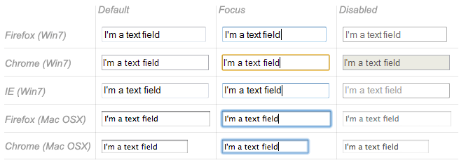
HTML5 enhances the basic single line text field by adding special values for the type attribute. Those values still turn an <input> element into a single line text field but they add a few extra constraints and features to the field.
E-mail address field
This type of field is set with the value email for the type attribute:
<input type="email" id="email" name="email" multiple>
When this type is used, the user is required to type a valid e-mail address into the field; any other content causes the browser to display an error when the form is submitted. Note that this is client-side error validation, performed by the browser:
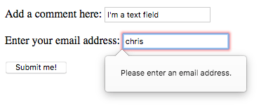
It's also possible to let the user type several e-mail addresses into the same input (separated by commas) by including the multiple attribute.
On some devices (especially on mobile), a different virtual keypad might be presented that is more suitable for entering email addresses.
Note: You can find out more about form validation in the article Form data validation.
Password field
This type of field is set using the value password for the type attribute:
<input type="password" id="pwd" name="pwd">
It doesn't add any special constraints to the entered text, but it does obscure the value entered into the field (e.g. with dots or asterisks) so it can't be read by others.
Keep in mind this is just a user interface feature; unless you submit your form securely, it will get sent in plain text, which is bad for security — a malicious party could intercept your data and steal passwords, credit card details, or whatever else you've submitted. The best way to protect users from this is to host any pages involving forms over a secure connection (i.e. at an https:// ... address), so the data is encrypted before it is sent.
Modern browsers recognize the security implications of sending form data over an insecure connection, and have implemented warnings to deter users from using insecure forms. For more information on what Firefox implements, see Insecure passwords.
Search field
This type of field is set by using the value search for the type attribute:
<input type="search" id="search" name="search">
The main difference between a text field and a search field is how the browser styles it — often, search fields are rendered with rounded corners, and/or given an "x" to press to clear the entered value. However, there is another added feature worth noting: their values can be automatically saved to be auto completed across multiple pages on the same site.
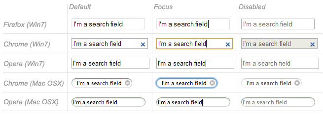
Phone number field
This type of field is set using tel as the value of the type attribute:
<input type="tel" id="tel" name="tel">
Due to the wide variety of phone number formats around the world, this type of field does not enforce any constraints on the value entered by a user (this can include letters, etc.). This is primarily a semantic difference, although on some devices (especially on mobile), a different virtual keypad might be presented that is more suitable for entering phone numbers.
URL field
This type of field is set using the value url for the type attribute:
<input type="url" id="url" name="url">
It adds special validation constraints to the field, with the browser reporting an error if invalid URLs are entered.
Note: Fields that have special constraints and are in error prevent the form from being sent; in addition, they can be styled so as to make the error clear. We will discuss this in detail in the article: Data form validation.
Multi-line text fields
A multi-line text field is specified using a <textarea> element, rather than using the <input> element.
<textarea cols="30" rows="10"></textarea>
The main difference between a textarea and a regular single line text field is that users are allowed to type text that includes hard line breaks (i.e. pressing return).
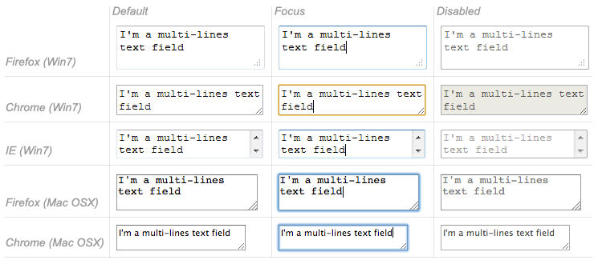
Note: You can find an example of a multi-line text field on GitHub at multi-line-text-field.html (see it live also). Have a look at it, and notice how in most browsers, the text area is given a drag handle on the bottom right to allow the user to resize it. This resizing ability can be turned off by setting the text area's resize property to none using CSS.
<textarea> also accepts a few extra attributes to control its rendering across several lines (in addition to several others):
| Attribute name | Default value | Description |
|---|---|---|
cols |
20 |
The visible width of the text control, in average character widths. |
rows |
The number of visible text lines for the control. | |
wrap |
soft |
Indicates how the control wraps text. Possible values are: hard or soft |
Note that the <textarea> element is written a bit differently from the <input> element. The <input> element is an empty element, which means that it cannot contain any child elements. On the other hand, the <textarea> element is a regular element that can contain text content children.
There are two key related points to note here:
- If you want to define a default value for an
<input>element, you have to use thevalueattribute; for a<textarea>element on the other hand you put the default text between the starting tag and the closing tag of the<textarea>. - Because of its nature, the
<textarea>element only accepts text content; this means that any HTML content put inside a<textarea>is rendered as if it was plain text content.
Drop-down content
Drop-down widgets are a simple way to let users select one of many options without taking up much space in the user interface. HTML has two forms of drop down content: the select box, and autocomplete box. In both cases the interaction is the same — once the control is activated, the browser displays a list of values the user can select between.
Note: You can find examples of all the drop-down box types on GitHub at drop-down-content.html (see it live also).
Select box
A select box is created with a <select> element with one or more <option> elements as its children, each of which specifies one of its possible values.
<select id="simple" name="simple"> <option>Banana</option> <option>Cherry</option> <option>Lemon</option> </select>
If required, the default value for the select box can be set using the selected attribute on the desired <option> element — this option is then preselected when the page loads. The <option> elements can also be nested inside <optgroup> elements to create visually associated groups of values:
<select id="groups" name="groups"> <optgroup label="fruits"> <option>Banana</option> <option selected>Cherry</option> <option>Lemon</option> </optgroup> <optgroup label="vegetables"> <option>Carrot</option> <option>Eggplant</option> <option>Potato</option> </optgroup> </select>
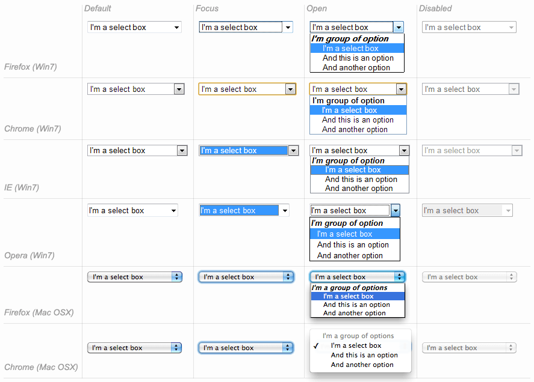
If an <option> element is set with a value attribute, that attribute's value is sent when the form is submitted. If the value attribute is omitted, the content of the <option> element is used as the select box's value.
On the <optgroup> element, the label attribute is displayed before the values, but even if it looks somewhat like an option, it is not selectable.
Multiple choice select box
By default, a select box only lets the user select a single value. By adding the multiple attribute to the <select> element, you can allow users to select several values, by using the default mechanism provided by the operating system (e.g. holding down Cmd/Ctrl and clicking multiple values).
Note: In the case of multiple choice select boxes, the select box no longer displays the values as drop-down content — instead, they are all displayed at once in a list.
<select multiple id="multi" name="multi"> <option>Banana</option> <option>Cherry</option> <option>Lemon</option> </select>
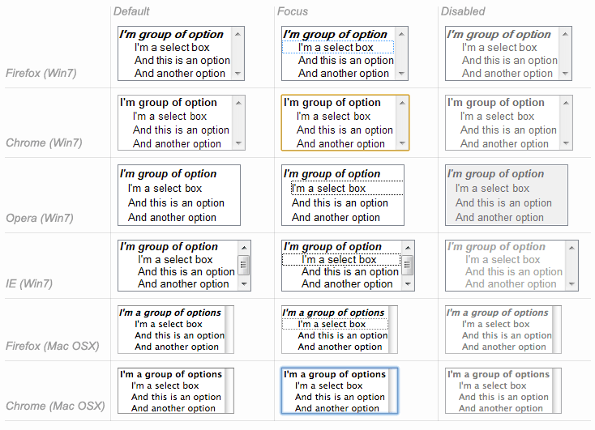
Autocomplete box
You can provide suggested, automatically-completed values for form widgets using the <datalist> element with some child <option> elements to specify the values to display.
The data list is then bound to a text field (usually an <input> element) using the list attribute.
Once a data list is affiliated with a form widget, its options are used to auto-complete text entered by the user; typically, this is presented to the user as a drop-down box listing possible matches for what they've typed into the input.
<label for="myFruit">What's your favorite fruit?</label> <input type="text" name="myFruit" id="myFruit" list="mySuggestion"> <datalist id="mySuggestion"> <option>Apple</option> <option>Banana</option> <option>Blackberry</option> <option>Blueberry</option> <option>Lemon</option> <option>Lychee</option> <option>Peach</option> <option>Pear</option> </datalist>
list attribute and the <datalist> element can be used with any kind of widget requiring a user input. However, it is unclear how it should work with controls other than text (color or date for example), and different browsers behave differently from case to case. Because of that, be cautious using this feature with anything but text fields.Datalist support and fallbacks
The <datalist> element is a very recent addition to HTML forms, so browser support is a bit more limited than what we saw earlier. Most notably, it isn't supported in IE versions below 10, and Safari still doesn't support it at the time of writing.
To handle this, here is a little trick to provide a nice fallback for those browsers:
<label for="myFruit">What is your favorite fruit? (With fallback)</label> <input type="text" id="myFruit" name="fruit" list="fruitList"> <datalist id="fruitList"> <label for="suggestion">or pick a fruit</label> <select id="suggestion" name="altFruit"> <option>Apple</option> <option>Banana</option> <option>Blackberry</option> <option>Blueberry</option> <option>Lemon</option> <option>Lychee</option> <option>Peach</option> <option>Pear</option> </select> </datalist>
Browsers that support the <datalist> element will ignore all the elements that are not <option> elements and will work as expected. On the other hand, browsers that do not support the <datalist> element will display the label and the select box. Of course, there are other ways to handle the lack of support for the <datalist> element, but this is the simplest (others tend to require JavaScript).
| Safari 6 | 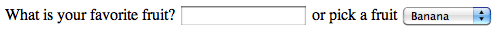 |
|---|---|
| Firefox 18 | 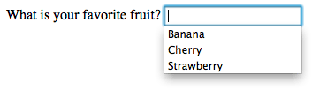 |
Checkable items
Checkable items are widgets whose state you can change by clicking on them. There are two kinds of checkable item: the check box and the radio button. Both use the checked attribute to indicate whether the widget is checked by default or not.
It's worth noting that these widgets do not behave exactly like other form widgets. For most form widgets, once the form is submitted all widgets that have a name attribute are sent, even if no value has been filled out. In the case of checkable items, their values are sent only if they are checked. If they are not checked, nothing is sent, not even their name.
Note: You can find the examples from this section on GitHub as checkable-items.html (see it live also).
For maximum usability/accessibility, you are advised to surround each list of related items in a <fieldset>, with a <legend> providing an overall description of the list. Each individual pair of <label>/<input> elements should be contained in its own list item (or similar). This is shown in the examples.
You also need to provide values for these kinds of inputs inside the value attribute if you want them to be meaningful — if no value is provided, check boxes and radio buttons are given a value of on.
Check box
A check box is created using the <input> element with its type attribute set to the value checkbox.
<input type="checkbox" checked id="carrots" name="carrots" value="carrots">
Including the checked attribute makes the checkbox checked automatically when the page loads.
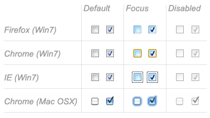
Radio button
A radio button is created using the <input> element with its type attribute set to the value radio.
<input type="radio" checked id="soup" name="meal">
Several radio buttons can be tied together. If they share the same value for their name attribute, they will be considered to be in the same group of buttons. Only one button in a given group may be checked at the same time; this means that when one of them is checked all the others automatically get unchecked. When the form is sent, only the value of the checked radio button is sent. If none of them are checked, the whole pool of radio buttons is considered to be in an unknown state and no value is sent with the form.
<fieldset> <legend>What is your favorite meal?</legend> <ul> <li> <label for="soup">Soup</label> <input type="radio" checked id="soup" name="meal" value="soup"> </li> <li> <label for="curry">Curry</label> <input type="radio" id="curry" name="meal" value="curry"> </li> <li> <label for="pizza">Pizza</label> <input type="radio" id="pizza" name="meal" value="pizza"> </li> </ul> </fieldset>
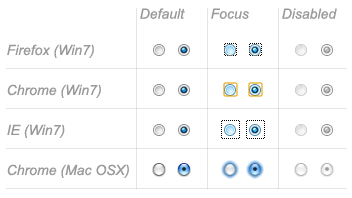
Buttons
Within HTML forms, there are three kinds of button:
- Submit
- Sends the form data to the server. For
<button>elements, omitting thetypeattribute (or an invalid value oftype) results in a submit button. - Reset
- Resets all form widgets to their default values.
- Anonymous
- Buttons that have no automatic effect but can be customized using JavaScript code.
Note: You can find the examples from this section on GitHub as button-examples.html (see it live also).
A button is created using a <button> element or an <input> element. It's the value of the type attribute that specifies what kind of button is displayed:
submit
<button type="submit">
This a <br><strong>submit button</strong>
</button>
<input type="submit" value="This is a submit button">
reset
<button type="reset">
This a <br><strong>reset button</strong>
</button>
<input type="reset" value="This is a reset button">
anonymous
<button type="button">
This an <br><strong>anonymous button</strong>
</button>
<input type="button" value="This is an anonymous button">
Buttons always behave the same whether you use a <button> element or an <input> element. There are, however, some notable differences:
- As you can see from the examples,
<button>elements let you use HTML content in their labels, which are inserted inside the opening and closing<button>tags.<input>elements on the other hand are empty elements; their labels are inserted insidevalueattributes, and therefore only accept plain text content. - With
<button>elements, it's possible to have a value different than the button's label (by setting it inside avalueattribute). This isn't reliable in versions of Internet Explorer prior to IE 8.
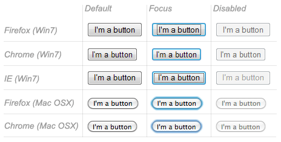
Technically speaking, there is almost no difference between a button defined with the <button> element or the <input> element. The only noticeable difference is the label of the button itself. Within an <input> element, the label can only be character data, whereas in a <button> element, the label can be HTML, so it can be styled accordingly.
Advanced form widgets
In this section we cover those widgets that let users input complex or unusual data. This includes exact or approximate numbers, dates and times, or colors.
Note: You can find the examples from this section on GitHub as advanced-examples.html (see it live also).
Numbers
Widgets for numbers are created with the <input> element, with its type attribute set to the value number. This control looks like a text field but allows only floating-point numbers, and usually provides some buttons to increase or decrease the value of the widget.
It's also possible to:
- Constrain the value by setting the
minandmaxattributes. - Specify the amount by which the increase and decrease buttons change the widget's value by setting the
stepattribute.
Example
<input type="number" name="age" id="age" min="1" max="10" step="2">
This creates a number widget whose value is restricted to any value between 1 and 10, and whose increase and decrease buttons change its value by 2.
number inputs are not supported in versions of Internet Explorer below 10.
Sliders
Another way to pick a number is to use a slider. Visually speaking, sliders are less accurate than text fields, therefore they are used to pick a number whose exact value is not necessarily important.
A slider is created by using the <input> with its type attribute set to the value range. It's important to properly configure your slider; to that end, it's highly recommended that you set the min, max, and step attributes.
Example
<input type="range" name="beans" id="beans" min="0" max="500" step="10">
This example creates a slider whose value may range between 0 and 500, and whose increment/decrement buttons change the value by +10 and -10.
One problem with sliders is that they don't offer any kind of visual feedback as to what the current value is. You need to add this yourself with JavaScript, but this is relatively easy to do. In this example we add an empty <span> element, in which we will write the current value of the slider, updating it as it is changed.
<label for="beans">How many beans can you eat?</label> <input type="range" name="beans" id="beans" min="0" max="500" step="10"> <span class="beancount"></span>
This can be implemented using some simple JavaScript:
var beans = document.querySelector('#beans');
var count = document.querySelector('.beancount');
count.textContent = beans.value;
beans.oninput = function() {
count.textContent = beans.value;
}
Here we store references to the range input and the span in two variables, then we immediately set the span's textContent to the current value of the input. Finally, we set up an oninput event handler so that every time the range slider is moved, the span textContent is updated to the new input value.
range inputs are not supported in versions of Internet Explorer below 10.
Date and time picker
Gathering date and time values has traditionally been a nightmare for web developers. HTML5 brings some enhancements here by providing a special control to handle this specific kind of data.
A date and time control is created using the <input> element and an appropriate value for the type attribute, depending on whether you wish to collect dates, times, or both.
datetime-local
This creates a widget to display and pick a date with time, but without any specific time zone information.
<input type="datetime-local" name="datetime" id="datetime">
month
This creates a widget to display and pick a month with a year.
<input type="month" name="month" id="month">
time
This creates a widget to display and pick a time value.
<input type="time" name="time" id="time">
week
This creates a widget to display and pick a week number and its year.
<input type="week" name="week" id="week">
All date and time control can be constrained using the min and max attributes.
<label for="myDate">When are you available this summer?</label> <input type="date" name="myDate" min="2013-06-01" max="2013-08-31" id="myDate">
Warning — The date and time widgets don't have the deepest support. At the moment, Chrome, Edge, Firefox, and Opera support them well, but there is no support in Internet Explorer and Safari has patchy support.
Color picker
Colors are always a bit difficult to handle. There are many ways to express them: RGB values (decimal or hexadecimal), HSL values, keywords, etc. The color widget lets users pick a color in both textual and visual ways.
A color widget is created using the <input> element with its type attribute set to the value color.
<input type="color" name="color" id="color">
Warning — Color widget support it currently not very good. There is no support in Internet Explorer, and Safari currently doesn't support it either. The other major browsers do support it.
Other widgets
There are a few other widgets that cannot be easily classified due to their very specific behaviors, but which are still very useful.
Note: You can find the examples from this section on GitHub as other-examples.html (see it live also).
File picker
HTML forms are able to send files to a server; this specific action is detailed in the article Sending and retrieving form data. The file picker widget is how the user can choose one or more files to send.
To create a file picker widget, you use the <input> element with its type attribute set to file. The types of files that are accepted can be constrained using the accept attribute. In addition, if you want to let the user pick more than one file, you can do so by adding the multiple attribute.
Example
In this example, a file picker is created that requests graphic image files. The user is allowed to select multiple files in this case.
<input type="file" name="file" id="file" accept="image/*" multiple>
Hidden content
It's sometimes convenient for technical reasons to have pieces of data that are sent with a form but not displayed to the user. To do this, you can add an invisible element in your form. Use an <input> with its type attribute set to the value hidden.
If you create such an element, it's required to set its name and value attributes:
<input type="hidden" id="timestamp" name="timestamp" value="1286705410">
Image button
The image button control is one which is displayed exactly like an <img> element, except that when the user clicks on it, it behaves like a submit button (see above).
An image button is created using an <input> element with its type attribute set to the value image. This element supports exactly the same set of attributes as the <img> element, plus all the attributes supported by other form buttons.
<input type="image" alt="Click me!" src="my-img.png" width="80" height="30" />
If the image button is used to submit the form, this widget doesn't submit its value; instead the X and Y coordinates of the click on the image are submitted (the coordinates are relative to the image, meaning that the upper-left corner of the image represents the coordinate 0, 0). The coordinates are sent as two key/value pairs:
- The X value key is the value of the
nameattribute followed by the string ".x". - The Y value key is the value of the
nameattribute followed by the string ".y".
So for example when you click on the image of this widget, you are sent to a URL like the following:
http://foo.com?pos.x=123&pos.y=456
This is a very convenient way to build a "hot map". How these values are sent and retrieved is detailed in the Sending and retrieving form data article.
Meters and progress bars
Meters and progress bars are visual representations of numeric values.
Progress
A progress bar represents a value that changes over time up to a maximum value specified by the max attribute. Such a bar is created using a <progress> element.
<progress max="100" value="75">75/100</progress>
This is for implementing anything requiring progress reporting, such as the percentage of total files downloaded, or the number of questions filled in on a questionnaire.
The content inside the <progress> element is a fallback for browsers that don't support the element and for assistive technologies to vocalize it.
Meter
A meter bar represents a fixed value in a range delimited by a min and a max value. This value is visualy rendered as a bar, and to know how this bar looks, we compare the value to some other set values:
- The
lowandhighvalues divide the range in three parts: - The
optimumvalue defines the optimum value for the<meter>element. In conjuction with thelowandhighvalue, it defines which part of the range is prefered:- If the
optimumvalue is in the lower part of the range, the lower range is considered to be the prefered part, the medium range is considered to be the average part and the higher range is considered to be the worst part. - If the
optimumvalue is in the medium part of the range, the lower range is considered to be an average part, the medium range is considered to be the prefered part and the higher range is considered to be average as well. - If the
optimumvalue is in the higher part of the range, the lower range is considered to be the worst part, the medium range is considered to be the average part and the higher range is considered to be the prefered part.
- If the
All browsers that implement the <meter> element use those values to change the color of the meter bar:
- If the current value is in the prefered part of the range, the bar is green.
- If the current value is in the average part of the range, the bar is yellow.
- If the current value is in the worst part of the range, the bar is red.
Such a bar is created using a <meter> element. This is for implementing any kind of meter, for example a bar showing total space used on a disk, which turns red when it starts to get full.
<meter min="0" max="100" value="75" low="33" high="66" optimum="50">75</meter>
The content inside the <meter> element is a fallback for browsers that don't support the element and for assistive technologies to vocalize it.
Support for progress and meter is fairly good — there is no support in Internet Explorer, but other browsers support it well.
Conclusion
As you'll have seen above, there are a lot of different types of available form elements — you don't need to remember all of these details at once, and can return to this article as often as you like to check up on details.
See also
To dig into the different form widgets, there are some useful external resources you should check out:
- The Current State of HTML5 Forms by Wufoo
- HTML5 Tests - inputs on Quirksmode (also available for mobile browsers)
In this module
- Your first HTML form
- How to structure an HTML form
- The native form widgets
- Sending form data
- Form data validation
- How to build custom form widgets
- Sending forms through JavaScript
- HTML forms in legacy browsers
- Styling HTML forms
- Advanced styling for HTML forms
- Property compatibility table for form widgets